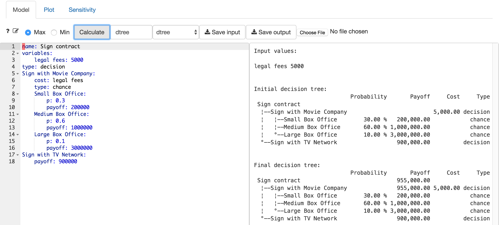
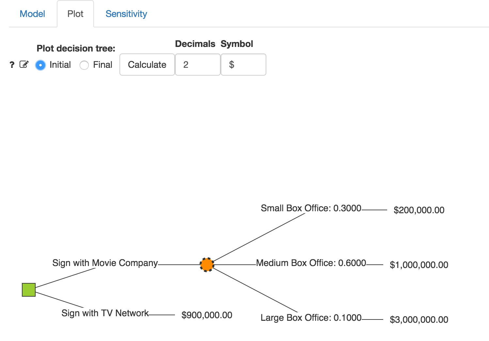
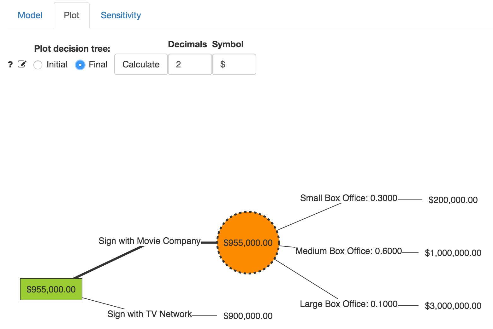
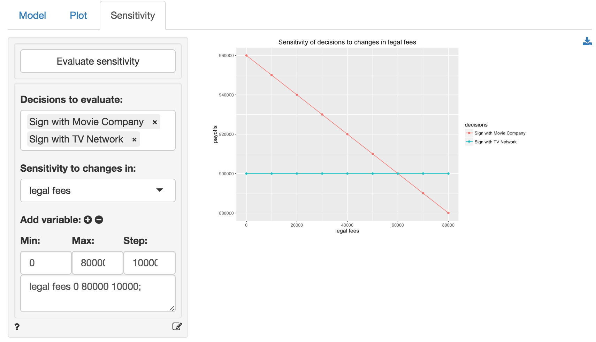

Model > Decide > Decision analysis
Create and evaluate a decision tree for decision analysis
To create and evaluate a decision tree first (1) enter the structure of the tree in the input editor or (2) load a tree structure from a file. When you first navigate to the Model > Decision analysis tab you will see an example tree structure. This structure is based on an example by Christop Glur, the developer of the data.tree library.
To enter a new structure, start by providing a name for the tree and enter a label in the input box next to the Calculate button. In the example below the name for the decision tree is entered as follow: name: Sign contract. The next step is to indicate the type of the first node. Options are type: decision or type: chance. Note that we are skipping variables for now but will return to this section below.
In the provided example, the first node is a decision node. The decision maker has to decide to Sign with Movie Company or Sign with TV Network. The first option leads to a chance node with probabilities and payoffs. The second has a fixed payoff.
Note: Indentation is critically important when defining a tree structure. Use tabs to create branches as shown in the example. Names for branches must be followed by a
:and information about the branch must be indented using thetabkey.
After providing the name for the decision Sign with Movie Company, the next line must be indented using the tab key. In the example, the next line starts the description of a chance node (type: chance). There are 3 possibilities in the example: (1) Small Box Office, (2) Medium Box Office, and (3) Large Box Office, each with a probability and a payoff. These are end-points for one branch of the tree and are often referred to as terminal nodes or leaves. All endpoints must have a payoff value.
Note: Probabilities for a chance node should sum to 1 and all probabilities must be smaller than 1.
A decision can also be assigned a cost. For example, if we decide to sign with the movie studio we may incur a cost of $5,000 for legal support. Assume the contract with the TV network is simpler and does not reguire legal assistance. Note that using costs is optional. In the example we could also subtract $5,000 from each of the possible box-office payoffs.
If some values in the tree are relate or repeated it can be useful to use a variables section. Here you can assign labels to values and formulas. In the Sign contract example only one variable is created (i.e., legal fees). The Sensitivity tab requires that a variables section is included in the tree structure.
Rules for decision tree input
- Always start with a tree name (e.g.,
name: My tree) - The second line should start a
variablessection or a node defintion (i.e., type: chance or type: decision) - All lines must have a
:. For node names the:ends the line. For all other lines it assigns a value. Specically, it assigns a name (e.g.,name: My tree), a node type (e.g.,type: decision), a variable (e.g.,legal fees: 5000), or a number (e.g.,payoff: 100,p: 0.1,cost: 10) - A node type must be followed on the next line by a node name (e.g.,
Cancel orders:) - Use only letters and spaces in node names (i.e., no symbols)
- The line after a node name must always be indented
- End (or terminal or leave) nodes must have a payoff (e.g.,
payoff: 100) - If linked to a chance node, terminal nodes must have a probability (e.g,
p: 0.4) and a payoff
After specifying the tree structure in the editor, press the Calculate button to see the Initial and Final decision tree in text format on the right side of the screen (see screen shot below). The initial tree simply shows the tree structure that was specified, together with the node types, probabilities, costs, and payoffs. The final tree shows the optimal decision strategy determined by folding-back the tree. In this case, the optimal decision is to Sign with Movie Company because this decision has a higher Expected Monetary Value (EMV).

For a visual representation of the decision tree open the Plot tab. If you already clicked the Calculate button in the Model tab you will see a graph of the Initial decision tree (see screen shot below). Decision nodes are shown in green and chance nodes in orange. If the tree does not look as you intended/expected, return to the Model tab and edit the tree structure.

The Final graph shows the optimal decision determined by folding-back the tree. The optimal decision is to Sign with Movie Company because this decision has a higher Expected Monetary Value. Note that the optimal decision at each decision node is shown by a thicker line connecting to the nodes.

The EMV for the Sign with TV Network is $900,000. The expected box office revenue following a decision to Sign with Movie Company is:
\[ 0.3 \times 200,000 + 0.6 \times 1,000,000 + 0.1 \times 3000,000 - 5,000 = 955,000 \]
The EMV from signing with the movie company is however \(960,000 - 5,000 = 955,000\). Hover the cursor over the chance node shown on screen to see a tooltip that shows the calculation. To highlight that a cost was specified the chance node in the figure has a dashed outer line.
In the Sign contract example it is clear that Sign with Movie Company is the prefered option. However, suppose the legal fees associated with this option were $10,000, or $30,000, would we still choose the same option? This is where the Sensitivity tab is useful. Here we can evaluate how decisions (e.g., Sign with Movie Company and Sign with TV Network) would change if the legal fee changes. Enter 0 as the Min value, 80000 as the Max value, 10000 as the Step size, and then press the icon. After pressing Evaluate sensitivty a graph will be shown that illustrates how payoffs for the decisions change. Notice that for legal fees higher than $60,000 Sign with TV Network produces the highest EMV.

The decision tree editor
Useful keyboard short-cuts:
- Comment current or selected line(s) (Win: Ctrl-/ Mac: Cmd-/)
- Fold all lines (Win: Alt-0 Mac: Alt-Cmd-0)
- Unfold all lines (Win: Shift-Alt-0 Mac: Shift-Alt-Cmd-0)
- Search (Win: Ctrl-f, Mac: Cmd-f)
- Search & Replace (Win: Ctrl-f-f, Mac: Cmd-f-f)
- Undo edit (Win: Ctrl-z, Mac: Cmd-z)
- Redo edit (Win: Shift-Ctrl-z, Mac: Shift-Cmd-z)
You can also (un)fold lines using the small triangles next to the line numbers.
For additional shortcuts see:
https://github.com/ajaxorg/ace/wiki/Default-Keyboard-Shortcuts